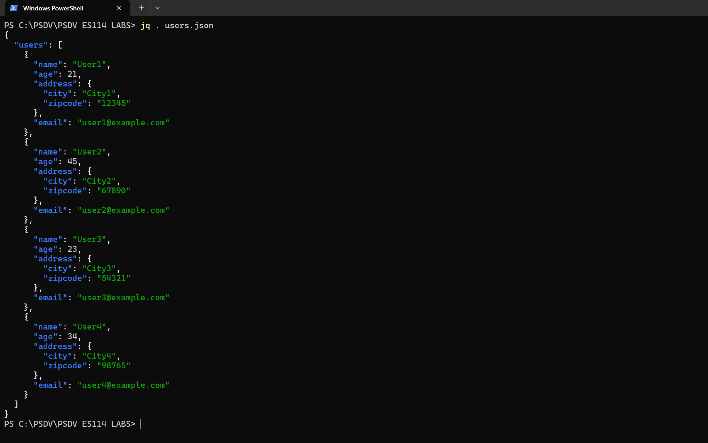
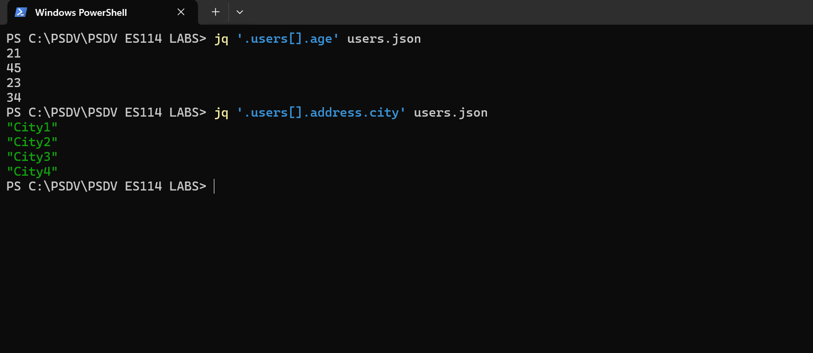
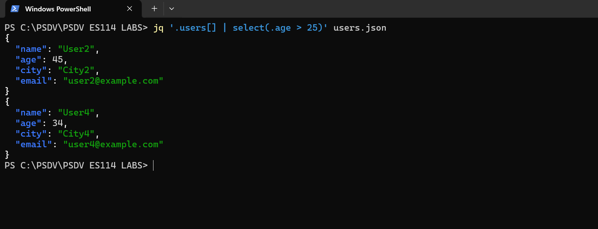
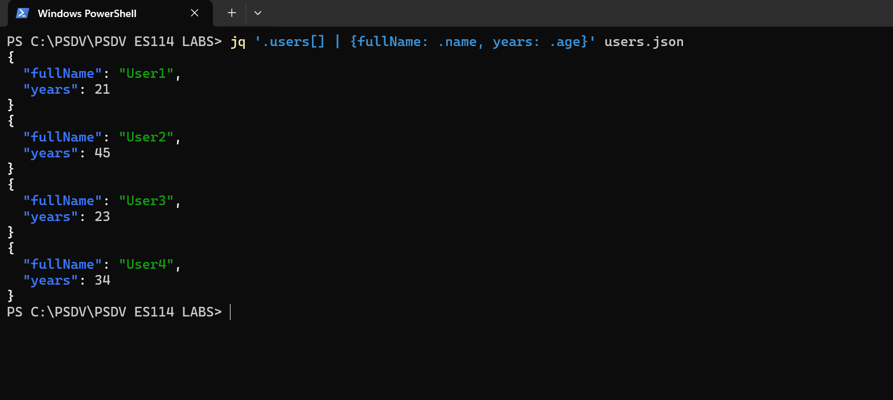
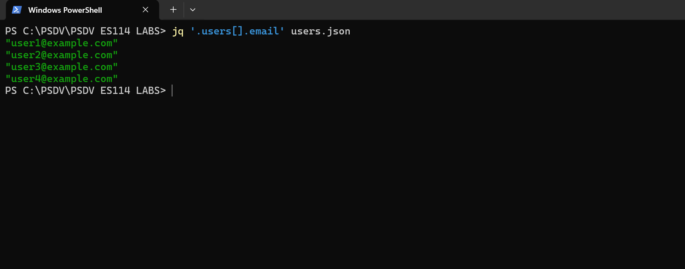
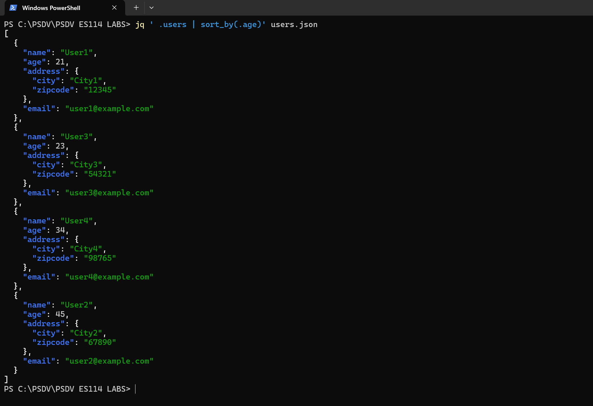
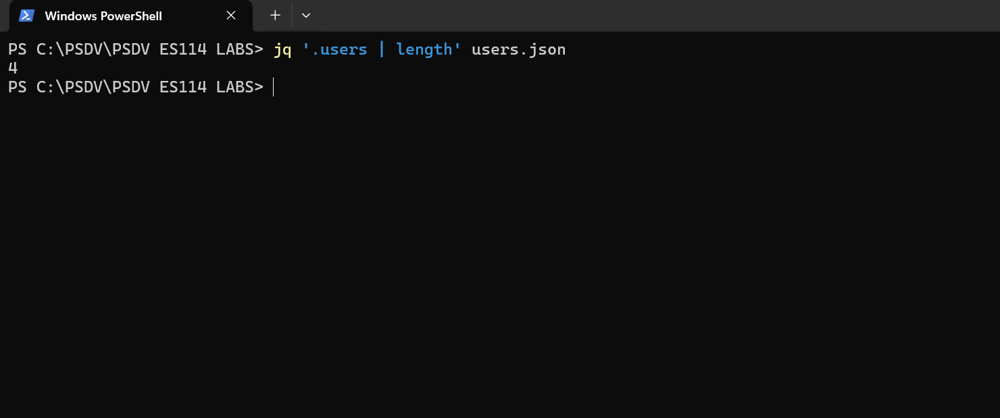
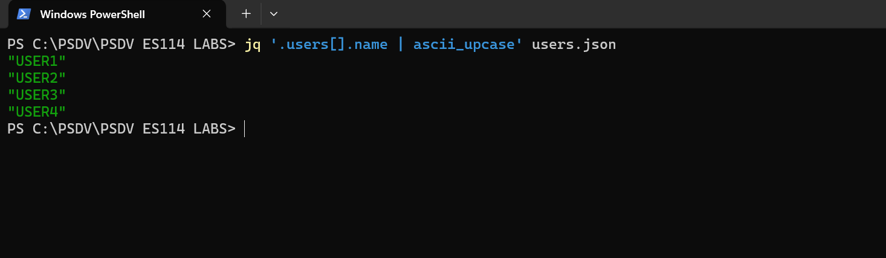
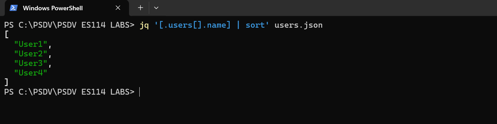
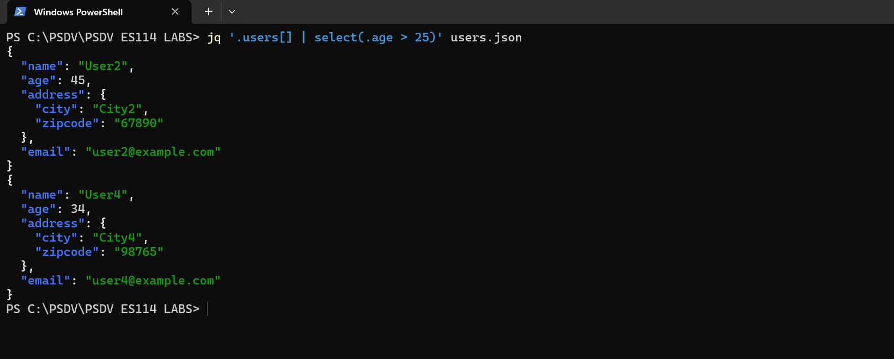

Set-ExecutionPolicy Bypass -Scope Process -Force; [System.Net.ServicePointManager]::SecurityProtocol = [System.Net.ServicePointManager]::SecurityProtocol -bor 3072; iex ((New-Object System.Net.WebClient).DownloadString('https://community.chocolatey.org/install.ps1'))BLOG
****jq – Lightweight command-line JSON processor****
JSON (JavaScript Object Notation) is a data format which structures and stores data efficiently. It is lightweight and readable which means that it is easy to read and write for humans and easy for machines to parse and generate. It is commonly used in APIs for the exchange of data between different applications. It is used in different programming languages like Python, JavaScript, Java, etc. JSON is a library in Python and its object looks like a python dictionary. ##### JSON Data Types: 1. String → “Alice” 2. Number → 25 3. Boolean → true / false 4. Array → [“Math”, “Science”] 5. Object → {“city”: “New York”, “zip”: “10001”} 6. Null → null
Introduction to Jq
Jq is a command-line tool which is used for transforming, processing and the filtering of JSON data. It is fast, readable and has been specially designed for effectively handling structured JSON files. There are different other JSON processors like Jello, jid, Gron and fx which can be used to alter data according to our needs, but jq is considered best because of its speed and flexibility. It can handle structured JSON data directly in the command line, making it a powerful tool for all developers and data analysts. A jq program is a filter. It takes an input and gives an output. It has a lot of different bulletin filters for different tasks. Filters can be glued together in jq, to basically form the loops and iterations that are made in different languages. The input to jq is parsed as a sequence of JSON values which are seperated by white space and are passed through the provied filter one at a time. Then these values are written in the stadard output.
Installation and Setup Guide
Steps to install jq:
The jq could be installed in two major ways. 1. Using system commands/ external package managers 2. Manual Installation from jq official website (https://jqlang.org/download/)
For Windows
- Chocolatey (choco):
- Open PowerShell as Administrator and run:
- Restart PowerShell and check installation:
choco --version- Further install jq using
choco install jq
- Winget (winget) (Comes preinstalled on Windows 10/11):
- If not installed, get it from the Microsoft Store: (https://apps.microsoft.com/detail/9nblggh4nns1?hl=en-US&gl=IN)
- Check installation:
winget --version- Further install jq using
winget install jqlang.jq- Scoop (scoop):
Open Powershell as administrator and run:
```powershell Set-ExecutionPolicy RemoteSigned -Scope CurrentUser iwr -useb get.scoop.sh | iex
Verify Installation:
```powershell scoop –version
Further install jq using:
```powershell scoop install jq
Alternatively, you can download the pre-built binary for Windows from the jq releases page and add it to your system’s PATH. (https://jqlang.org/download/)
For Linux
The package managers used in this are already pre installed in Linux. Using Bash is appropriate and recommended for Linux users because of its better compatibality, syntax friendliness and it comes pre installed in Linux systems.
- APT (apt-get or apt) – Used in Debian-based distributions like Ubuntu, Debian, and Linux Mint.
- In bash: ```bash sudo apt install jq
- In some older systems use: ```bash sudo apt-get install apt
- DNF (dnf) – Used in Fedora, RHEL (Red Hat Enterprise Linux), and CentOS
- In bash: ```bash sudo dnf install jq
- In some older systems use: ```bash sudo yum install jq
Key features and functionalities of jq
Overview- - | jq . → Pretty print JSON - | jq ‘.key’ → Extract a specific key - | jq ‘.[ ].key’ → Extract values from an array - | jq ‘select(.condition)’ → Filter JSON by conditions - | jq ‘keys’ → Get all keys in an object - | jq ‘length’ → Count array elements
Some of the key features of jq are given below: 1. Pretty-printing JSON: It formats the data into a readable form.
EXAMPLE:
#command
jq . users.json
#output
from IPython.core.display import HTML
HTML('<img src="1.png" style="width:100%; display:block; margin:0;">')

Extracting specific fields: It is used to select a speecific field from the JSON object.
EXAMPLE:
- #command
jq ‘users[].age’ data.json
- #for nested fields
jq ‘users[].address.city’ data.json
from IPython.core.display import HTML
HTML('<img src="2new.png" style="width:100%; display:block; margin:0;">')

Filtering of the JSON data
We can extract the data that matches our condition by iterating through it.
EXAMPLE:
- #command
jq ‘.users[] | select(.age > 25)’ users.json
- #output
from IPython.core.display import HTML
HTML('<img src="3.png" style="width:100%; display:block; margin:0;">')

Transforming JSON by mapping and modifying
We can change the structure of a JSON data or can form new values.
EXAMPLE:
#command
jq ‘.users[] | {fullName: .name, years: .age}’ users.json
#output
{"fullName": "Alice", "years": 30} {"fullName": "Bob", "years": 22}
from IPython.core.display import HTML
HTML('<img src="4new.png" style="width:100%; display:block; margin:0;">')

Working with arrays
We can use the .[] ,operator to extract values from an array
EXAMPLE:
#Command
jq ‘.users[].email’ users.json
from IPython.core.display import HTML
HTML('<img src="5.png" style="width:100%; display:block; margin:0;">')

Sorting JSON Data:
We can use [jq ‘.JSON_data | sort_by(.(parameter))’ JSON_data.]json to sort the data according to the parameter.
#command
jq ’ .users | sort_by(.age)’ users.json
#output
[{“name”: “Bob”, “age”: 22},
{“name”: “Alice”, “age”: 30}]
from IPython.core.display import HTML
HTML('<img src="6new.png" style="width:100%; display:block; margin:0;">')

Counting elements
We can print the number of users useing the length command.
#command
jq ‘.users | length’ users.json
#output
2
from IPython.core.display import HTML
HTML('<img src="7.png" style="width:100%; display:block; margin:0;">')

String manipulation
Manipulation of strings using different filters for required output.
#command for making names uppercase
jq ‘.users[].name | ascii_upcase’ users.json
#output
“ALICE”
“BOB”
from IPython.core.display import HTML
HTML('<img src="8.png" style="width:100%; display:block; margin:0;">')

Combining multiple commands
We can form a chain of different commands using the pipe ‘|’ operator.
EXAMPLE: Extracr names, sort theem and format them as an array.
#command
jq ‘[.users[].name] | sort’ users.json
from IPython.core.display import HTML
HTML('<img src="9.png" style="width:100%; display:block; margin:0;">')

The select operator
#command
jq ‘.users[] | select(.age > 25)’ users.json
#output
“Alice”
from IPython.core.display import HTML
HTML(‘’)
Most common mistakes
These are some mistakes that us being a beginner tend to make and to make sure that you do not commit any of these we take up this topic.
Use cases
jq is widely used in DevOps, API development, log analysis, data processing and automation. Its speed, flexibility, and simplicity make it one of the best tools for handling JSON data efficiently.
Processiing API Responses
Suppose you are working with APIs that give JSSON data andd you need to extract ceertain fields.
Steps:
Fetch API data.
Use jq command to extract the required fields.
EXAMPLE: To extract all ussernames from a JSON API response
Log file analysis
Suppose many system logs are stored in JSON format, you can use jq to filter specific log details.
Steps:
Create logs.json
Use jq to filter only errors
jq ‘.logs[] | select(.level==“error”)’ logs.json
EXAMPLE: To extract error messages from a log file (logs.json)
Data transforming and formatting
Suppose you need too convert the JSON data into a more structured format like .csv
Steps:
Use users.json
Convert the JSON data into CSV using
jq -r ‘.users[] | [.name, .email, .age] | @csv’ users.json
EXAMPLE: To convert the given data into csv.
Combining and merging JSON files
Suppose you have multiple JSON files and you need to merge them using jq.
Steps:
Create two JSON files data1.json and data2.json
Merge them into a single file using
jq -s ‘.[0].users + .[1].users’ data1.json data2.json
EXAMPLE: Merging data1.json and data2.json
Automating data pipelines
Supposee using jq in a script to automate JSON data extraction and transformation.
Steps:
Extract only emails using
jq -r ‘.users[].email’ users.json > emails.txt
Check the content of emails.txt using
cat emails.txt
EXAMPLE: To extract user emails and save them to a file.
Configuration file handling
Suppose you need to moddify JSON based configuration files.
Create config.json
{ “settings”: { “theme”: “dark”, “notifications”: true, “enabled”: false} }
Change “enabled: false to true using
jq ‘.settings.enabled = true’ config.json > new_config.json
Conclusion
jq is a powerful yet simple tool for working with JSON in the command line. It helps users quickly read, filter, and modify JSON data with ease. Whether you’re handling API responses, configuration files, or automation tasks, jq makes the process faster and more efficient. Its easy-to-use commands save time and effort, making it a great choice for anyone who works with JSON regularly.
References
jq documentation https://devdocs.io/jq/
https://www.baeldung.com/linux/jq-command-json?utm_source
https://jqlang.org/?utm_source
https://manpages.org/jq/?utm_source
Other manuals and tutorials
https://jqlang.org/tutorial/
https://jqlang.org/manual/
https://jqlang.org/manual/v1.6/